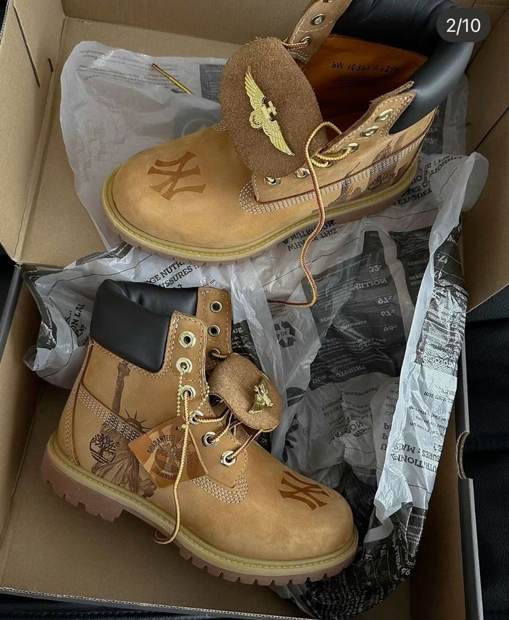
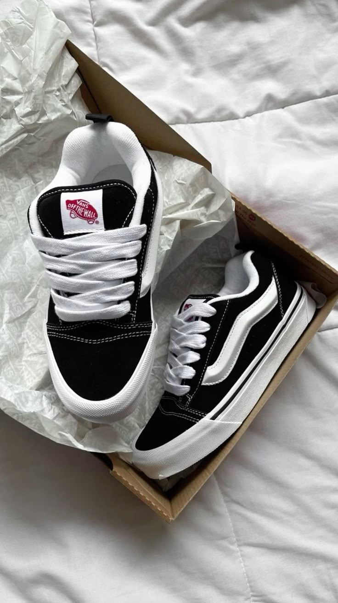
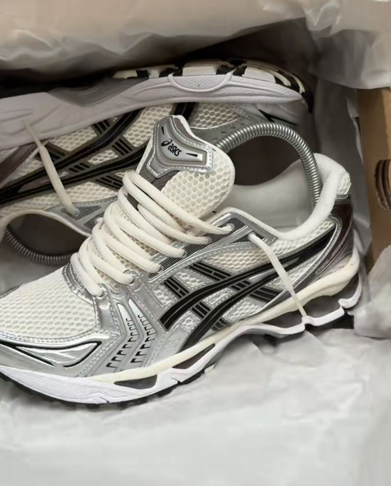
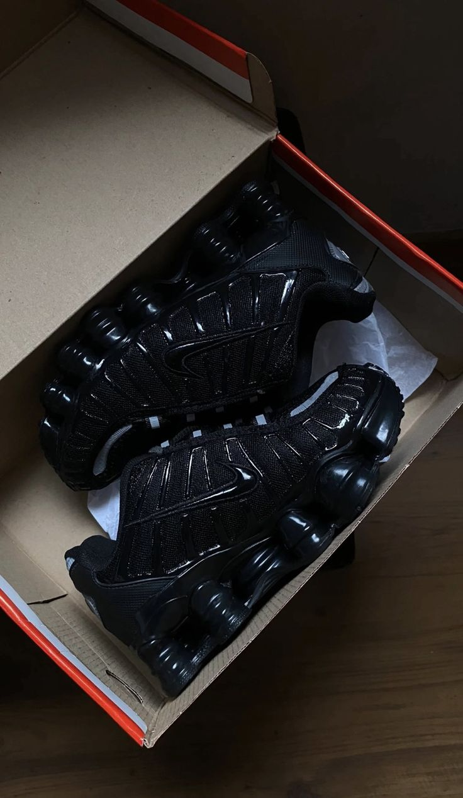

Shoes
Streetwear
Timberland boots trace their origins to 1952 when Nathan Swartz, a Lithuanian immigrant, bought the Abington Shoe Company in Boston, initially making sturdy work boots. By 1973, the company introduced the iconic 6-inch yellow waterproof boot under the Timberland brand, featuring innovative seam-sealed leather and injection-molded soles for durability and comfort. Over the 1980s and 1990s, Timberlands expanded globally, gaining popularity not only for rugged outdoor use but also as a fashion statement embraced by hip-hop culture. Today, Timberland continues to blend its heritage of toughness with modern style.


Vans was founded in 1966 by brothers Paul and James Van Doren in Anaheim, California, as the Van Doren Rubber Company, initially selling shoes directly to customers from their factory, and quickly became popular for their durable canvas-and-rubber footwear; throughout the 1970s and 1980s, Vans became closely associated with skateboarding culture, introducing iconic models like the Authentic, Era, Old Skool, and checkerboard slip-ons, while also expanding into music, streetwear, and action sports, and today the brand is a global lifestyle icon celebrated for its creativity, cultural influence, and enduring connection to youth and skateboarding communities.
_____________________________________________________________________________________________
Daily
The Asics Gel-Kayano line was introduced in 1993 by the Japanese sportswear company Asics, aiming to provide long-distance runners with a combination of stability, cushioning, and support. The shoe was named after Masaaki Kayano, a former Asics employee and runner who contributed to its design, and it was specifically engineered to address overpronation while maintaining comfort for high-mileage training. The Gel-Kayano series quickly became Asics’ flagship stability running shoe, incorporating innovative technologies like GEL cushioning, Dynamic DuoMax support, and Guidance Trusstic systems, which evolved with each iteration.


The Nike Shox line was introduced in 2000 as a revolutionary athletic shoe concept designed to provide superior cushioning and impact protection through its signature column-like springs in the midsole. These foam-and-column structures were engineered to absorb shock during running and jumping while providing a responsive, springy feel, appealing to both athletes and casual wearers. The design combined performance technology with futuristic aesthetics, making Shox instantly recognizable in sports and street culture. Nike released multiple variations over the years for running, basketball, and lifestyle purposes, and the shoes became especially popular in the 2000s for their bold.